CISCO Configuring Static Network Address Translation (NAT)
Network Address Translation (NAT) is the practice of taking an IP address on one interface, translating it to another IP address, and then pushing it out on another interface. It is primarily used for security and privacy. NAT comes in two forms - static and dynamic. In this tutorial, we will explore static NAT (and a bit of Port Address Translation (PAT) at the end).
Lab Setup
- GNS3 as the network emulation software.
- 1x CISCO router on IOSv 15.7 (Router - Cisco Modelling Labs Personal $199).
- 1x Webserver.
- 1x External Client PC.
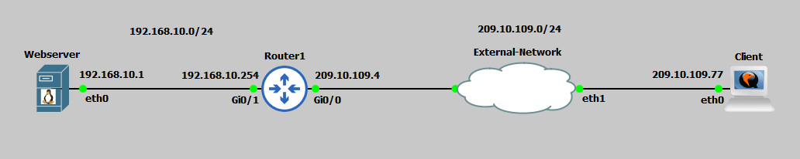
IP Schema
The first thing we need to decide on in order to get these systems talking is an IP addressing scheme. For this example, I am going to use /24 subnets on networks 192.168.10.0 (our internal network) and 209.10.109.0 (the external network). For this guide we are going simulate the external network being the internet. The IP address on our gi0/0 interface is the ISP facing interface; we have been given a public IP address of 209.10.109.4. We have also told our ISP we would like to purchase a second IP address for our services - in this example, to serve our webserver. Our ISP has provided us with a second public IP address of 209.10.109.5. The external client can be anything in this range; I have chosen to use 209.10.109.77. We are going to host our webserver on 192.168.10.1.IP Configuration
To start I am going to IP address our webserver: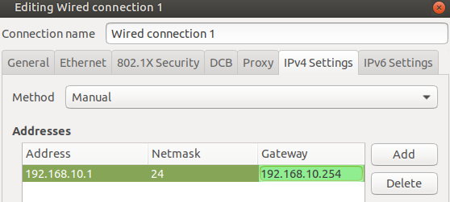
I am going to IP address the external client as: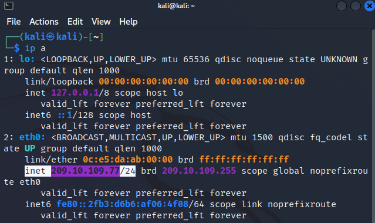
Next I IP address the router interfaces: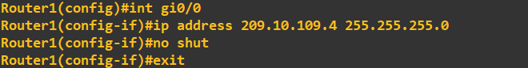
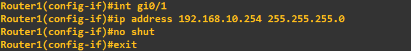
I will now do a quick connectivity check from the external client to our public facing router interface and internal webserver: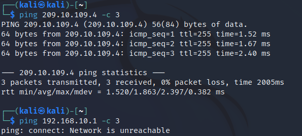
As expected the external client can reach our routers public facing interface, but not our internal client.Employing Static NAT
We want the external client to be able to reach our internal webserver using our ISP provided second public IP address (209.10.109.5). We can achieve this using static NAT; this will translate access to our public address to a specified internal address i.e. our webserver (192.168.10.1). We first need to tell the router which interfaces are the inside and outside NAT: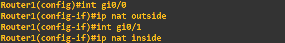
Notice I am not using our router interfaces 209.10.109.4 address, I am using our additional public address. All we need to do now is enable NAT on this address: Lets setup a simple webserver on our 192.168.10.1 server and ensure access is achieved and translation is taking place. I am using a simple Python3 webserver for this demo. The page being hosted is: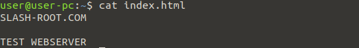
I will now start the webserver: To test our static NAT configuration, I will first ping our 209.10.109.5 address: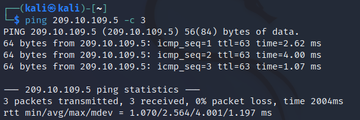
This reply is coming from our webserver as we can see the TTL has been reduced by 1 (by the router) from 64 (Linux default). We can see the translated traffic in Wireshark by inspecting the line between the router and webserver: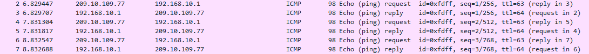
Lets try to access our webpage on the external client: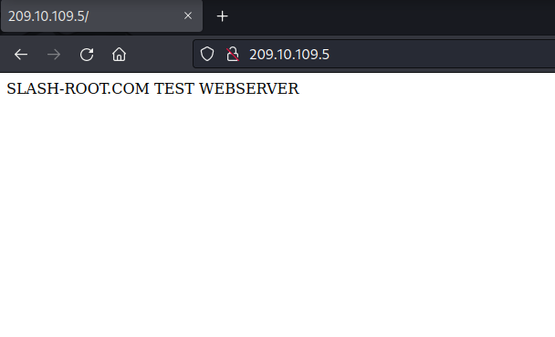
Success, our webserver is accessible from our public IP address thanks to static NAT. We can view this translation on the router: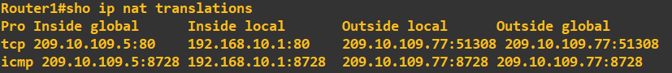
Employing Static PAT
The web browser on our external machine is automatically assuming port 80 (default HTTP) when we enter the IP address 209.10.109.5 into our browser, it really looks like this 209.10.109.5:80. We just don't see the port 80 addition. Our static NAT is then translating this to 192.168.10.1:80 on the inside - which is the correct port our webserver is being hosted on. However, if we decided host our webserver on port 9999, our static NAT configuration would fail. Lets test this change: All I have done is re-hosted the website on port 9999 instead of port 80. When we access this from the outside now: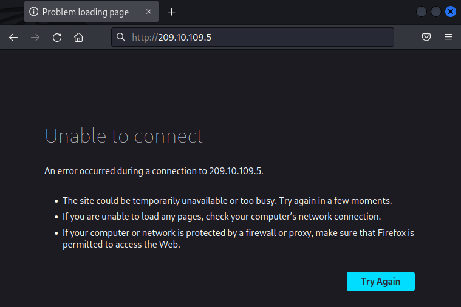
What is happening here, is our static NAT is translating 209.10.109.5:80 to 192.168.10.1:80 - which is now incorrect. We could fix this issue through 1 of 2 ways. First, we could access the website in our browser on 209.10.109.5:9999, however, we can't reasonably expect an external visitor to know we are using HTTP on port 9999. Therefore, we need to employ static PAT. First, I remove the static NAT configuration and add a static PAT configuration, the commands to do this is are:ip nat inside source static tcp 192.168.10.1 9999 209.10.109.5 80
This is telling the router that traffic received on the public address at port 80, translate this to the private address at port 9999. Lets now try to access our webserver from the external client:
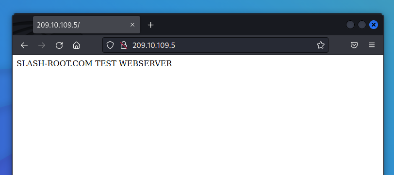
Checking this translation in Wireshark again confirms our configuration (I have added the src and dst port columns so you can see the port addresses):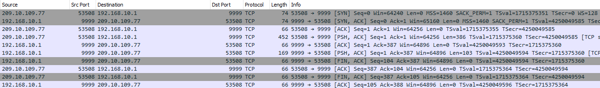
Again, we can view the router nat translations to see the detail: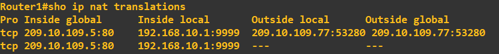
That concludes static NAT and PAT. You will more then likely see this configurations to enable external access to internal servers. Dynamic NAT will usually be employed to enable connectivity from internal to external resources. This is covered in another guide.